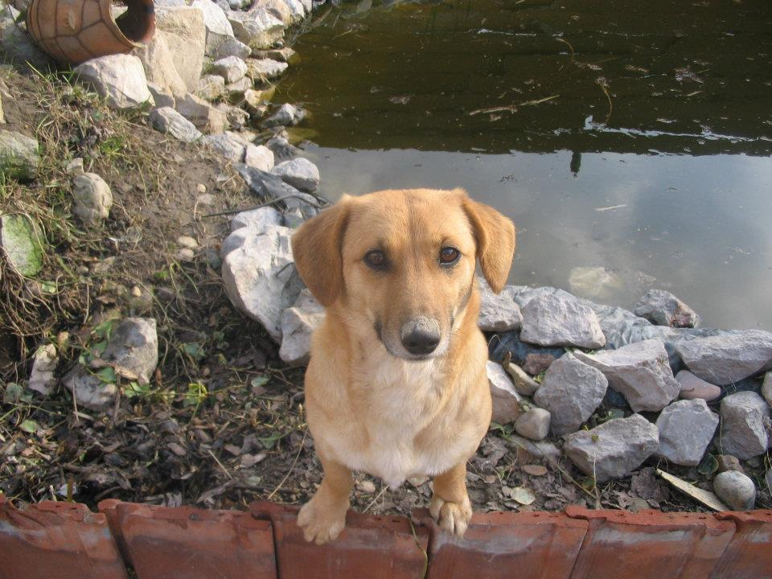
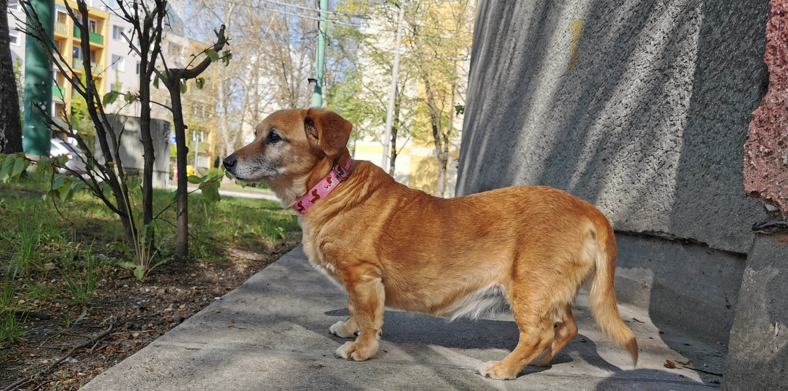
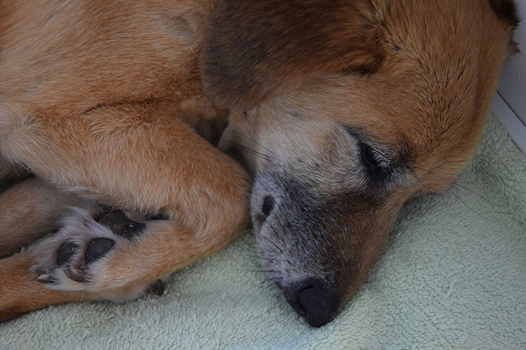
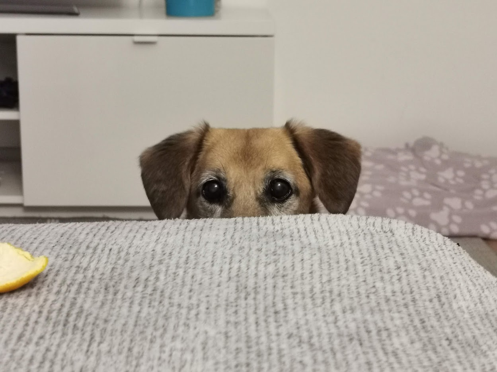

Gömbi is a 17-year-old mixed breed dog who lives in Hungary. She is quite active considering her age,
she likes to travel and always looking for new adventures. She becomes very excited every time she is about to leave the apartment.
Few hours car ride? No problem. Staying in a hotel? No problem. She is very curious about everything but doesn’t like to make new dog friends.
They are usually too energetics and intrusive.
Past Life

Gömbi was born in Jánoshalma, a little town in Hungary. She was a typical country dog for 15 years.
She was guarding the house, going on walks by herself, always finding a way out from the backyard but also finding the way back home.
She accompanied family members to the bus/train stop to say goodbye to them and then going back home alone. She mostly ate leftovers
- what she didn’t mind at all. She was kind of a gourmet all her life. She was living the life but over time her hearing got very bad,
and her eyes got cataracts, also still living outside, spending most of her time alone in the backyard or the streets. It was time for
her to get comfier so her favorite family member and his boyfriend moved her to Szeged with them to live in an apartment.
Current Life

Gömbi is living in an apartment since 2019 and she loves it. No more freezing during winter or suffering from the
hot weather in the summer. She always has some human company which is her favorite thing. I think if she had the choice, she would be
still eating leftovers but sadly she must eat expensive dog food now and let’s be honest: human food is way better. Her calendar is usually
full: going on for walks three times a day, visiting family members during weekends and going to restaurants, coffee shops and on
holidays with her humans. She can’t walk very fast and gets tired easily, but luckily, she can be carried. Gömbi likes to sit on the
streets with her humans and just observing everything. She had a few serious illnesses so far, but she laughed them in the face.
Also, she has a very accurate clock hidden somewhere because she always knows exactly when it’s time for a walk or a dish.
Sleeping habits

Gömbi is a real conformist, she can easily sleep through the night, but she also knows when it’s time for the morning walk.
During the day she only sleeps superficially and even if she gets tired during any trip or walk, she can get rested in a few hours.
She is very active right before her evening walks, but after it she falls into the deepest sleep for the night. She doesn’t bother
with guarding the house anymore, she is retired now.
Her Personality

She is an old lady for sure, she has her will sometimes, she can be kind of stubborn. If it’s possible she never
leaves her human’s side and almost never barks except in her sleep. She doesn’t know any tricks, but she is house-trained by herself,
and always checks her humans for directions during walks. If you are a human, you are in luck, because she is always open for some careful
petting. But she doesn’t want to make any, not even a single one dog friend, if its possible she tries to avoid any contact with doggos.